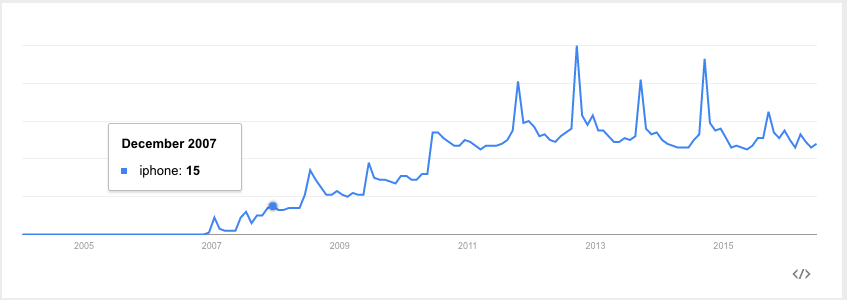
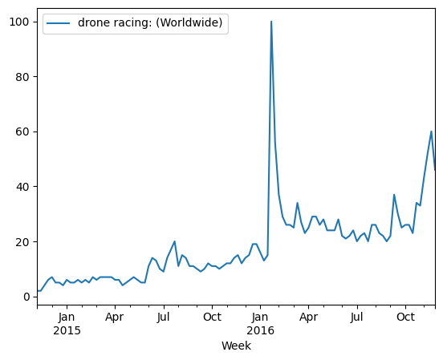

Learning Objectives#
After this lesson, you will be able to:
Define the concepts of trend and seasonality and be able to identify them visually.
Use boxplots to compare distributions.
Plot time series data over time to identify large-scale trends in data.
Investigate trends by computing simple aggregates with Pandas using the
.resample()function.Compute rolling statistics with Pandas to compare data of a date to a smaller window of time.
Utilize exponentially weighted windows to average out noise.
Use differences to remove trends in time series data.
Use the Pandas’
.shift()function to create lagged features.
Lesson Guide#
Time Series Rolling Statistics#
Trend and Seasonality
Question: What constitutes a trend in data? Is linearity required for a trend?
A trend is any long-term change in the value we’re measuring. Trends may “change direction,” going from an increasing trend to a decreasing trend.
Trends can only be measured within the scope of the data collected; there may be trends that are unmeasurable if the data are not complete.
An example of an upward trend:

When patterns repeat over known, fixed periods of time within a data set, we call this seasonality.
A seasonal pattern exists when a series is influenced by factors related to the cyclic nature of time — i.e., time of month, quarter, year, etc. Seasonality is of a fixed and known period, otherwise it is not truly seasonality. Additionally, it must be either attributed to another factor or counted as a set of anomalous events in the data.
Can you think of some seasonal patterns from your own experience?
import statsmodels.api as sm
import matplotlib.pyplot as plt
import numpy as np
import seaborn as sns
import pandas as pd
trends = pd.read_csv('data/gt_drone_racing.csv', skiprows=1, parse_dates=True, index_col = 0)
trends.head()
| drone racing: (Worldwide) | |
|---|---|
| Week | |
| 2014-11-09 | 2 |
| 2014-11-16 | 2 |
| 2014-11-23 | 4 |
| 2014-11-30 | 6 |
| 2014-12-07 | 7 |
trends.info()
<class 'pandas.core.frame.DataFrame'>
DatetimeIndex: 108 entries, 2014-11-09 to 2016-11-27
Data columns (total 1 columns):
# Column Non-Null Count Dtype
--- ------ -------------- -----
0 drone racing: (Worldwide) 108 non-null int64
dtypes: int64(1)
memory usage: 1.7 KB
trends.tail()
| drone racing: (Worldwide) | |
|---|---|
| Week | |
| 2016-10-30 | 33 |
| 2016-11-06 | 43 |
| 2016-11-13 | 52 |
| 2016-11-20 | 60 |
| 2016-11-27 | 46 |
trends.plot()
<Axes: xlabel='Week'>

Guided Practice#
Let’s look for trends and seasonality in data made available by a German drugstore, Rossmann. I have shared a link to the data here.
These data contain the daily sales made at the drugstore, as well as whether or not a sale or holiday affected the data.
Because we are most interested in the Date column (which contains the date of sales for each store), we will make sure to process that as a datetime type and make it the index of our DataFrame, as we did with our Apple stock data.
Let’s recall the steps for preprocessing time series data with Pandas:
Convert time data to a
datetimeobject.Set
datetimeto index the DataFrame.
import pandas as pd
import matplotlib as plt
import seaborn as sns
This allows us to easily filter by date. Let’s add a column for Year and Month based on the datetime index.
There are more than a million sales data points in this data set, so, for some simple exploratory data analysis (EDA), we’ll focus on just one store.
Note: We explicitly add a .copy() to the returned DataFrame because we will be making changes to this DataFrame object later. If we didn’t specify this, we will receive SettingCopyWarnings later on because Pandas will not know if we want to edit a view of the original data object (data) or a separate data object (store1_data). Without the .copy(), the variable store1_data will simply be a reference the original data object in memory.
#limit to store 1
Plot the sales data.#
Let’s investigate whether or not promotions affect sales. For this, we’ll use boxplots.
On state holidays, the store is closed (which means there are zero sales), so we need to cut those days out. (Contextual knowledge like this is always necessary to truly explain time series phenomena.)
Check for Understanding: Can you think of any other special considerations we should make when tracking sales?
Now, check to see if there is a difference affecting sales on promotion days.
We can see that there is a difference in sales on promotion days.
Why is it important to separate out days on which the store is closed? Because there aren’t any promotions on those days either, so including them will bias our sales data on days without promotions! Remember to think about the business logic in addition to analyzing the raw data.
We may also want to compare sales across days of the week:
Lastly, we want to identify larger-scale trends in our data. How did sales change from 2014 to 2015? Were there any particularly interesting outliers in terms of sales or customer visits?
To plot the sales and customer visits over time:
# Filter to days Store 1 was open.
We can see that there are large spikes of sales and customers toward the end of 2013 and 2014, leading into the first quarter of 2014 and 2015.
Let’s use index filtering to filter just to 2015 changes over time. This should make it easier to identify the holiday sales bump.
Aggregate Data
If we want to investigate trends over time in sales, as always, we’ll start by computing simple aggregates. We want to know: What were the mean and median sales in each month and year?
We can use data.resample on the whole data set and provide:
- A parameter for the level on which to roll up to: 'D' for day, 'W' for week, 'M' for month, 'A' for year.
- The aggregation method to perform: mean(), median(), sum(), etc.
#average annual sales
It looks like average sales were highest in 2015. Now, let’s look at the median annual sales.
#median annual sales
#quarterly average sales
For more information, see Pandas’ .resample documentation.
Rolling Statistics
With time series, we can “roll” statistics across time. For example, the rolling mean is the mean of a moving window across time periods. Pandas offers a variety of functionalities for creating rolling statistics, which we’ll only scratch the surface of here.
E.g., to understand holidays sales, we don’t want to compare sales data in late December with the entire month but instead with a few days immediately surrounding it. We can do this using rolling averages.
The syntax for these can be a little tricky at first. We’ll be using a rolling() function with a statistical function chained to it. Let’s dive into more detail.
Parameters for rolling() Functions#
rolling().mean() (as well as rolling().median()) can take the following parameters:
The first indicates the time series to aggregate.
windowindicates the number of periods to include in the average.centerindicates whether the window should be centered on the date or use data prior to that date.
Calculate the rolling daily sum over all stores.#
Use the .resample() function to calculate the daily total over all of the stores.
#total daily sales
Use the .rolling() function to calculate the rolling average over a three-day period.
#three day rolling mean
We can use our index filtering to just look at 2015.
Instead of plotting the full time series, we can plot the rolling mean instead, which smooths random changes in sales and removes outliers, helping us identify larger trends.
The Expanding Mean#
The expanding mean simply uses all of the data points up to the current time to calculate the mean, as opposed to a moving window.
Calculate and plot the expanding mean below. Resample by quarter.#
rolling_mean = data.Sales.resample('Q').sum().rolling(window=1, center=False).mean()
expanding_mean = data.Sales.resample('Q').sum().expanding().mean()
---------------------------------------------------------------------------
NameError Traceback (most recent call last)
Cell In[14], line 1
----> 1 rolling_mean = data.Sales.resample('Q').sum().rolling(window=1, center=False).mean()
2 expanding_mean = data.Sales.resample('Q').sum().expanding().mean()
NameError: name 'data' is not defined
Exponentially Weighted Windows#
Exponentially weighted windows are one of the most common and effective ways of averaging out noise in time series data. The averaging is done with an “exponential decay” on the contribution of prior means, decreasing the contribution of time points that are further in the past.
The (adjusted) exponentially weighted mean for time, \(t\), is defined as:
$\( x_t = \frac{x_t + (1 - \alpha)x_{t-1} + (1 - \alpha)^2x_{t-1} + ... + (1 - \alpha)^{t}x_0} {1 + (1 - \alpha) + (1 - \alpha)^2 + ... + (1 - \alpha)^{t}} \)$#
Note: Review Pandas’ documentation for more information.
Calculate and plot the exponentially weighted sum along with the rolling sum. What’s the difference?
For example: .resample('Q').sum().ewm(span=10).mean().
rolling_mean = data.Sales.resample('Q').sum().rolling(window=2, center=True).mean()
exp_weighted_mean = data.Sales.resample('Q').sum().ewm(span=10).mean()
Note that rolling doesn’t understand if you are missing periods (e.g., if you roll over three days and your data are missing weekends, it’ll roll Fri/Sat/Sun), so you need to resample first if you care about that.
Question: How does the signal that’s captured by rolling statistics differ from the signal captured by resampling time series data?
Differencing a Time Series and Stationarity
If a time series is stationary, the mean, variance, and autocorrelation (covered in the next section) will be constant over time. Forecasting methods typically assume the time series you are forecasting on to be stationary — or at least approximately stationary.
The most common way to make a time series stationary is through “differencing.” This procedure converts a time series into the difference between values.
$\( \Delta y_t = y_t - y_{t-1} \)$#
This removes trends in the time series and ensures that the mean across time is zero. In most cases, this only requires a single difference, although, in some, a second difference (or third, etc.) will be necessary to remove trends.
diff = store1_data['Sales'].diff(periods = 7)
#plot the differenced data and original data side by side
Shifting and Lagging Time Series Data
Another common operation on time series data is shifting or lagging values backward and forward in time. This can help us calculate the percentage of change from sample to sample. Pandas has a .shift() method for shifting the data in a DataFrame.
Let’s take a look at the Rossman data when we apply lagged features.
store1_data.head()
Let’s shift the sales price by one day.
shifted_forward = store1_data.shift(1)
shifted_forward.head()
Notice that the first row now contains NaN values because there wasn’t a previous day’s data to shift to that day.
Next, let’s shift the sales prices by five days.
shifted_forward5 = store1_data.shift(5)
shifted_forward5.head(10)
We can also use negative numbers to shift the sales values in the reverse direction.
shifted_backward = store1_data.shift(-1)
shifted_backward.head()
Lags can be used to calculate the changes in the values you are tracking with your time series data. In this case, we can use Pandas’ .shift() method to look at the changes in sales.
Let’s create a new column in our Rossman DataFrame that contains the previous day’s sales.
Note that we added .copy() when we filtered out the store 1 sales earlier. If we didn’t explictly tell Pandas that store1_data is a copy (instead of a view), we would receive a SettingCopyWarning. Here is a useful video that helps explain how to avoid SettingCopyWithWarning errors in Pandas.
store1_data.loc[:, 'Prev Day Sales'] = store1_data['Sales'].shift(1)
store1_data.head()
Using our new column, it’s simple to calculate the one-day change in sales at Store 1. Let’s create a new column for this value in our DataFrame as well.
store1_data['Sales Change'] = store1_data['Sales'] - store1_data['Prev Day Sales']
store1_data.head()
Question: What are some other real-world applications you can think of for shifting data in a time series?
Recap#
Trends are long-term changes in data. We have to sort through the noise of a time series to identify trends.
We can resample the data to look at simple aggregates and identify patterns.
Rolling statistics give us a local statistic of an average in time, smoothing out random fluctuations and removing outliers.
Independent Practice
Load the Unemployment data set from the google drive folder. Perform any necessary cleaning and preprocess the data by creating a
datetimeindex.
import pandas as pd
import numpy as np
import matplotlib.pyplot as plt
import seaborn as sns
import datetime
Calculate the rolling mean of years with
window=3, without centering, and plot both the unemployment rates and the rolling mean data.
Calculate the rolling median with
window=5andwindow=15. Plot both together with the original data.
Calculate and plot the expanding mean. Resample by quarter. Plot the rolling mean and the expanding mean together.
Calculate and plot the exponentially weighted sum along with the rolling sum.
Difference the unemployment rate and plot.
Is the unemployment rate stationary? Is the differenced version of the unemployment rate stationary?
Feature Engineering with Time Series#
Just as we saw with the housing data, there are ways to extract additional features from time series datasets. A library called tsfresh can help with this docs. Take a look through the documentation and identify a few ideas about what features of a time series dataset might be engineered (and think about how to actually do so!).